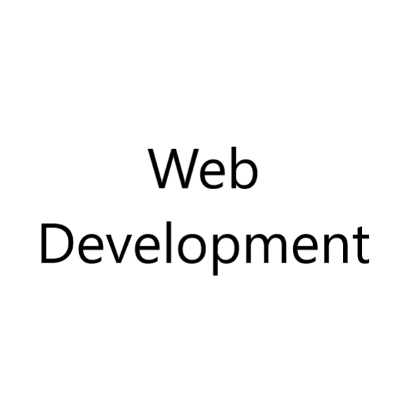
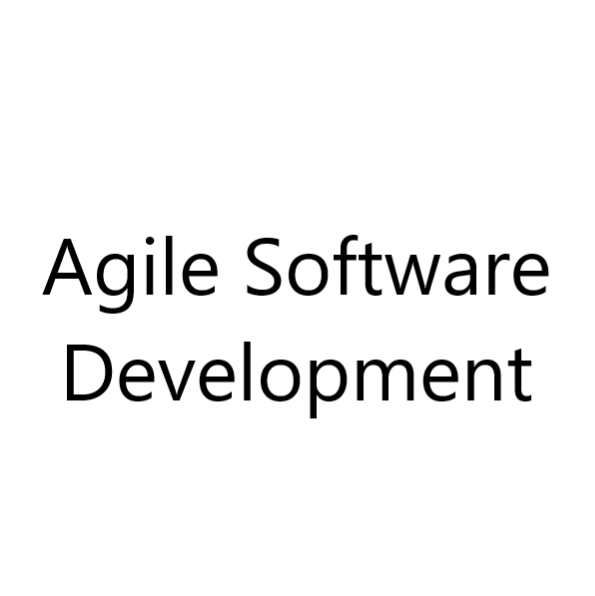
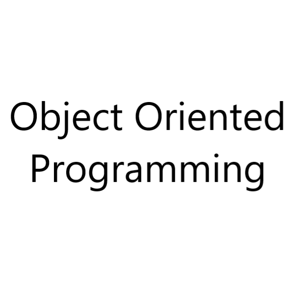

Programming Languages
Tools & Methodologies:



Welcome to the portfolio page of GyeongJun Son, a dedicated and innovative Computer Science student at the University of Rochester, anticipated to graduate in May 2024.
With a solid GPA and multiple Dean's List honors, my academic journey is marked by a passion for learning and excellence. I have enriched my education with courses in Data Structures, Algorithms, Artificial Intelligence, and Web Development, alongside a Coursera certification in Agile Software Development.
My technical proficiency spans Java, Python, C, and several other languages and tools, enabling me to craft projects like the strategic Othello game, the nutritional website Calochester, and a weather forecast app. These projects highlight my ability to apply theoretical knowledge to practical solutions.
In the professional sphere, I've contributed as a Mobile App Development Teaching Assistant and a Research Assistant at the University of Rochester, where I've honed my skills in mentoring and research. Additionally, my experience as an event staff worker in Tokyo has equipped me with teamwork and problem-solving skills.
Fluent in both Japanese and English, I navigate global environments effortlessly. This portfolio is a testament to my journey in technology, showcasing projects, skills, and experiences that underline my readiness to contribute to the tech industry.

This project is an implementation of the classic Reversi game (also known as Othello) in Java, featuring a graphical user interface (GUI) and an intelligent computer opponent. Players can enjoy the game against an AI that uses heuristic analysis and the minimax algorithm to determine its moves, providing varying levels of challenge.
Check it Out
This project is a weather forecast app built with Android Studio, offering users current weather information and forecasts for their selected location. It features a user-friendly interface and allows switching between local JSON data and real-time data from the OpenWeatherMap API. The app provides detailed weather conditions such as temperature, humidity, and wind speed, ensuring accurate and up-to-date weather information for users.
Check it OutPhone Number: +1 562-374-3342
Email Address: gyeongjun0824@gmail.com